Johnson-Neyman plot
keywords johnson-Neyman, moderation, simple slopes
3.3.4
In Multiple regression, moderated regression, and simple slopes example we have seen how to estimate and interpret interactions with continuous variables in a linear model. Now we show an example of the Johnson-Neyman plot, useful when dealing with interactions among continuous variables. Data are from Cohen et al 2003 and can be downloaded here. We are going to show how Johnson-Neyman plot employing a General Linear Model, but the same reasoning (and software options) can be applied to interactions in Generalized linear models, Mixed Models, and Generalized Mixed Models.
GAMLj implements the Johnson-Neyman plot employing code taken from the R pacakge interactions by Jacob A. Long. We had to alter the code to fit jamovi plotting methods, so some adjustments were required. This means that possible bugs are not to be associated with the original R package.
The Johnson-Neyman procedure
The JN plot depicts the size of the effect (the simple slope) of an independent variable on a dependent variable as a function of the levels of a moderator. The same plot provides the two values (if any) of the moderator at which the slope of the predictor goes from non-significant to significant.
The example
The research is about physical endurance associated with age and
physical exercise. 245 participants were measured while jogging on a
treadmill. Endurance was measured in minutes (‘yendu’ in the file).
Participants’ age (xage in years) and number of years of
physical exercise (zexer in years) were recorded as
well.
The researcher is interested in studying the relationships between
endurance, age, and exercising, with the hypothesis that the effect of
age (expected to be negative) is moderated by exercise, such that the
more participants work out (higher levels of zexer) the
less age negatively affects endurance.
Results
We focus on the parameters estimates, the B coefficients.

The interaction term appears to be statistically significant, B=0.047, t(241)=3.48,p<.001,\(\eta^2\)=0.048, justifying interpreting the first-order effects as conditional effects. Because variables are centered to their means, we can interpret the first-order effect as “average” effects.
Simple Slopes
One way to probe the interaction is to ask for simple effects. We go
to Simple effects tab and select xage as
Simple effects variable and zexer as
Moderator. In this way we obtain the effect of age computed
for high exercise (zexer centered to 1 SD above average),
the main effect of age (zexer centered to its mean) and the
effect of age computed for low exercise (zexer centered to
-1 SD above average). jamovi
GLM produces both the F-tests and the parameter estimates for the simple
slopes. We focus on the latter table now.

Simple Slopes Plot
We can get a clear picture of the interaction by asking for a plot. The plot module takes care of centering the variables in a way that makes the plot clearly understandable.

The command plots the effect of the Horizontal axis
variable for three levels (decided in Covariate scaling) of
the Separate Lines variable.
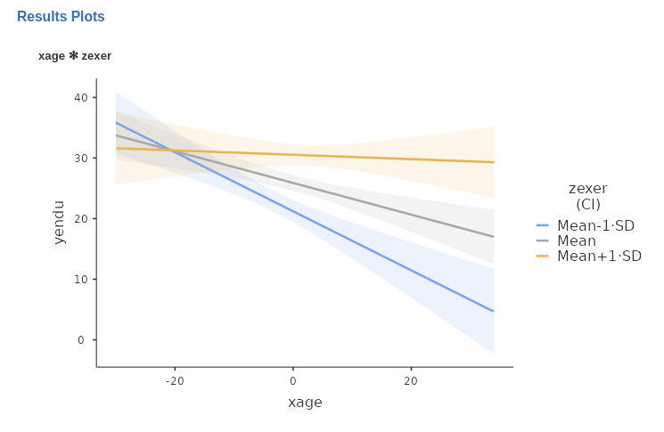
The nice plot we get shows the simple effects (simple equations to be precise) with the prediction confidence intervals indicated by the colored shades around the lines. If needed, the confidence intervals can be substituted with the standard errors of the estimates or they can be removed completely.
Johnson-Neyman plot
We can now ask the question: For which range of values of the
moderator zexer is the effect of age significant, and for
which values is not? That is the aim of the Johnson-Neyman plot. We ask
for it by going to panel Plots, ask for the plot selecting
Johnson-Neyman plot, and obtain the following:
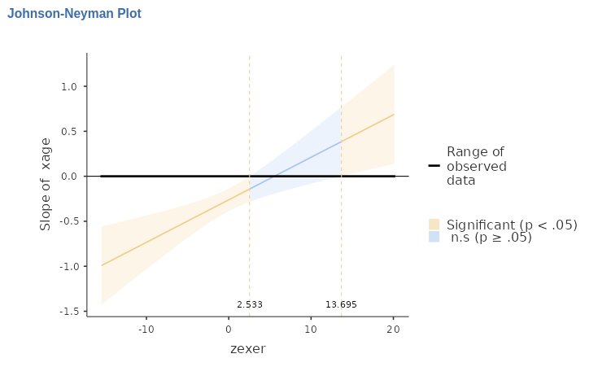
The X-axis shows the (centered) zexer values, and Y-axis
shows the size of the effect (simple slope) of age. So, we
can see that below zexer=2.533 and above
zexer=13.93 the effect of age is significant
at \(p<.05\), whereas within that
range the effect of age is not significant. We can also see
that below zexer=2.533 the effect of age is
negative, whereas above zexer=13.93 is positive.
When the scale of the moderator is untuitivelly clear, it is better
to obtain the plot using the moderator original scale. We can do that by
selecting X original scale in the Plots
panel.
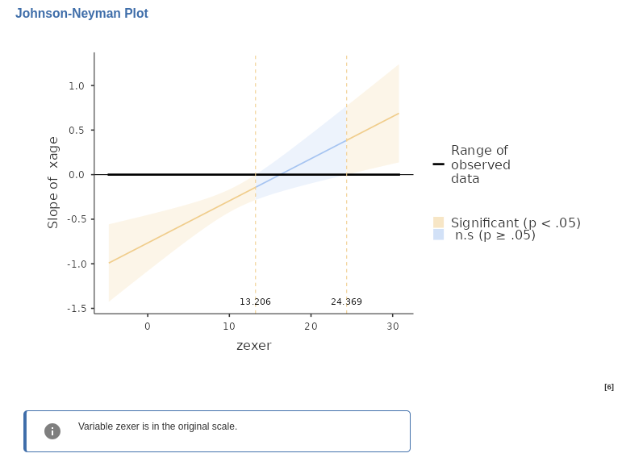
The plot now show the effect of age as a function of
zexer not centered. So, we can see that the effect of age
is significant for people that exercise for less than 13 years (recall
that zexer is years of weekly work-out) the effect of
age is negative and significant, whereas for people with
more than 24 years of exercising the effect of age is
positive and significant.
That’s the Johnson-Neyman plot.
Simple Johnson-Neyman plots
One nice feature of GAMLj is that
allows for estimating the simple Johnson-Neyman plot at different levels
of a third (or in general higher orders) moderator. Assume, for
instance, that in these data there was a grouping variables, say
nationality. The variable is not in the data so we simulate
one for didactic purposes by randomly assigning the participants to two
groups.
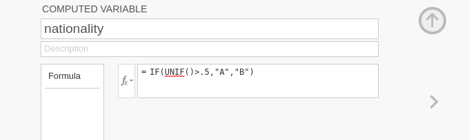
and include it in the model, with all interactions.
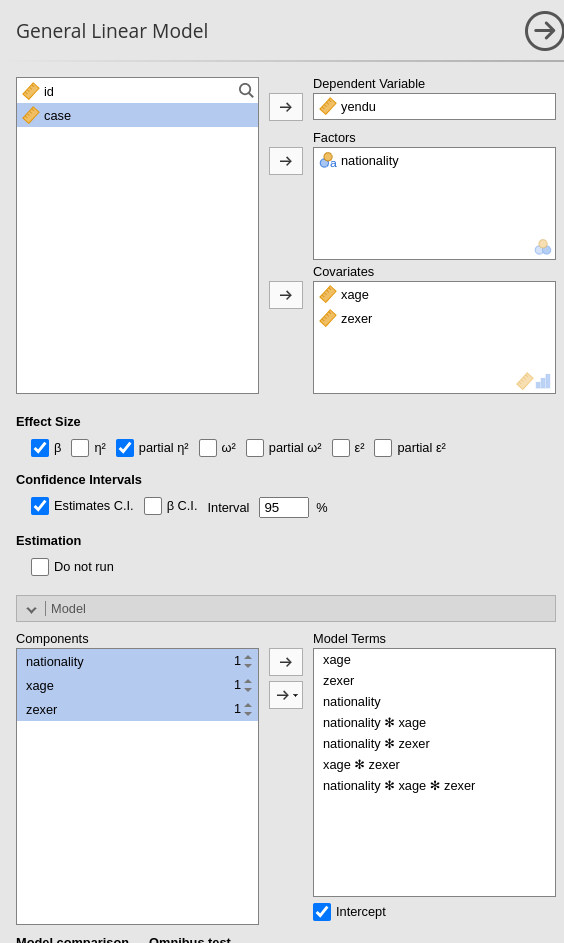
We now plot again the results, broken down by
nationality.
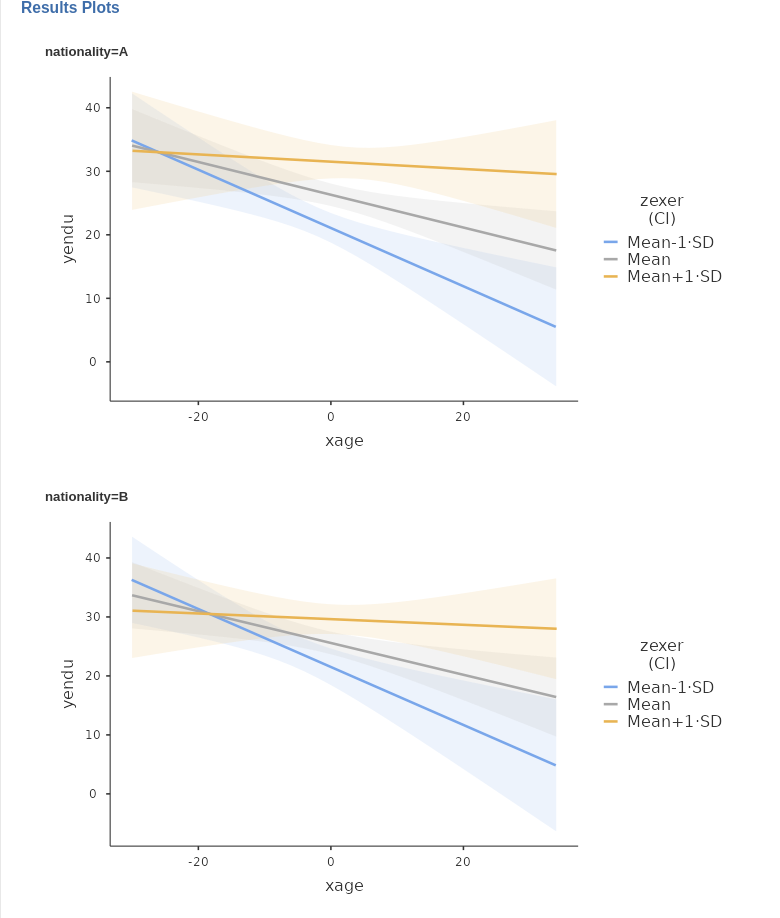
(being groups at random we do not see much of a difference in the
plots, but the idea is that the xage*zexer interaction may
be different at different levels of the moderator).
We can also ask the question: for which levels of zexer
is the effect xage significant, evaluating it at different
levels of nationality? In other words, we would like to plot a JN plot
for age and exer for each level of
nationality.
We just need to select, Johnson-Neyman plot again, and
we get the results.
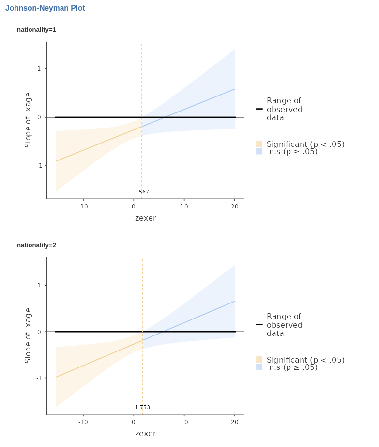
Again, being the groups randomly generated, we do not see much of a difference, but it can be seen that the two plots are indeed different. Obviously, the larger the three-way interaction, the more different will the plots appear.
With the simple JN plots we can evaluate the range of
significance of an effect, estimated at different levels of any
combinations of moderators (any combination of levels of the variables
listed in Separate plots).
Another Example
A more (visually) compelling example can be examined using
manymodels data in the jamovi
data library. That is a simulated dataset made on purpose to test GAMLj. In this dataset x and
z are continuous variables and cat3 is a
three-group categorical variable. We need to estimate the GLM model as
follows:
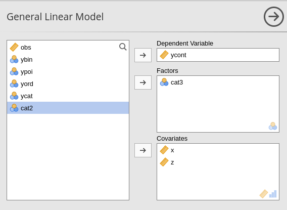
with all possible interactions.
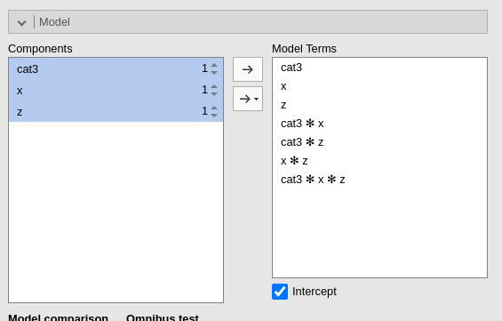
In this case we have a (almost) significant 3-way interaction
x*z*cat3, which indicates the the 2-way x*z
interaction varies across levels of cat3. Asking the
plot
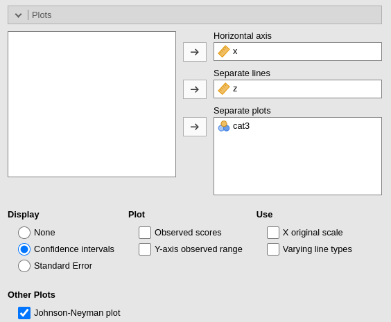
produces a nice set of JN plots, in which it is clear how the
cat3 moderator influences the way the effect of
x varies for different levels of z.
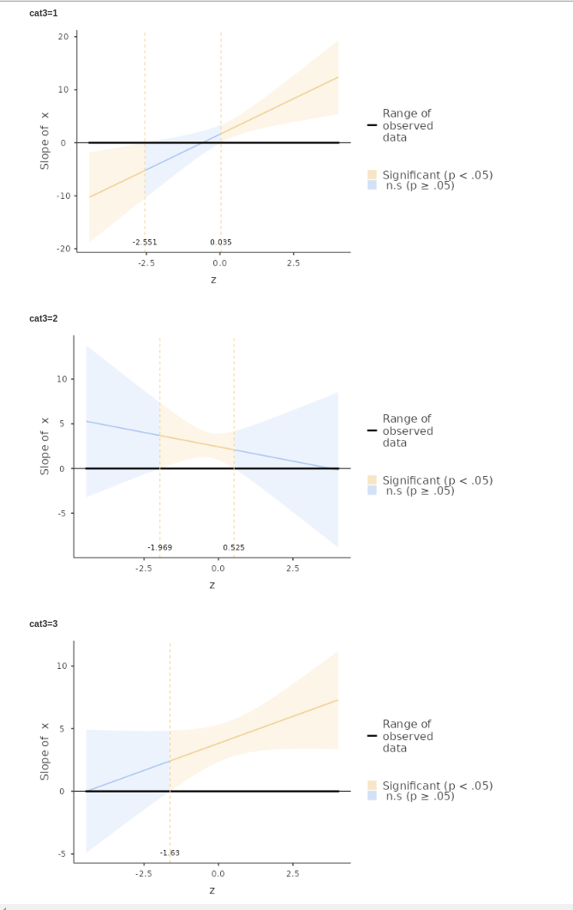
We can see that for cat3=1 the effect of x
is significant for z below -2.551 and above 0.035. For
cat3=2 the effect of x is significant only
within -1.969> z < .525, whereas for
cat3=3, the effect of x is significant for any
z>-1.63.
Those are simple JN plots.
Examples
Some worked out practical examples can be found here
Comments?
Got comments, issues or spotted a bug? Please open an issue on GAMLj at github or send me an email